Executor backend: from YARN container to schedulable executor
component index | Lifecycle guide
YarnCoarseGrainedExecutorBackend is the scheduler-facing endpoint in an executor JVM. The NodeManager launches that JVM; the backend speaks Spark RPC to the driver in either deploy mode. It turns LaunchTask messages into local method calls and turns local status updates back into driver messages. It neither allocates containers nor runs partition code on its RPC thread.
Flow at a glance
- Driver: Register the executor with zero free cores.
- Executor backend: Build the local runtime and report it ready.
- Driver backend: Offer the executor's cores to the scheduler.
Key distinction: The executor-added event confirms registration. Its cores become available only after the driver receives LaunchedExecutor.
Show the animated flow

One launch, three milestones
Sequence diagram · Open full sizeText equivalent
sequenceDiagram
participant N as YARN NodeManager
participant B as Executor JVM / backend
participant D as Spark driver
participant E as Executor runtime
N->>B: Start JVM with driver URL and executor ID
B->>D: RetrieveSparkAppConfig(resourceProfileId) via temporary RpcEnv
D-->>B: SparkAppConfig
B->>D: RegisterExecutor(id, endpoint ref, host, cores, resources, ...)
Note over D: Record executor with zero free cores
D-->>B: true
B->>B: RegisteredExecutor (local message)
B->>E: Construct Executor in this JVM
B->>D: LaunchedExecutor(id)
Note over D: Make cores available and offer them
D->>B: LaunchTask(encoded TaskDescription)
B->>E: launchTask(backend, description)
- Container running. The AM supplies the launch command: driver URL, executor ID, hostname, cores, application ID and resource-profile ID. The YARN entry point supplies the YARN user classpath, log URLs and container attributes; it delegates the protocol to
CoarseGrainedExecutorBackend. A temporary client-only driverPropsFetcher resolves the driver endpoint (up to three lookup attempts), then synchronously asks for the profile's SparkAppConfig. The reply includes Spark properties, the profile and optional credentials, I/O encryption key and log level. The fetcher shuts down; this is not the channel retained for task launches. Bootstrap
- Registered. The process builds the executor
SparkEnv, initializes its credential state and registers the backend under the endpoint name Executor. Its onStart checks direct memory when applicable, discovers resource addresses and asynchronously asks the driver to register self. The driver rejects a duplicate ID or excluded executor/host; on acceptance it stores ExecutorData with zero free cores, posts SparkListenerExecutorAdded and replies true. That reply is not a LaunchTask.
- Ready. The registration callback posts
RegisteredExecutor to itself, not to the driver. The endpoint constructs the Executor runtime and only then sends LaunchedExecutor. The driver's readiness handler sets free cores to total cores and makes resource offers. A registered executor visible to a listener need not yet have offered any capacity. Executor-side handoff
Steady-state contract and shutdown
| Direction |
What crosses the boundary |
| Driver to backend |
LaunchTask carries an encoded description; the backend decodes it and calls executor.launchTask. KillTask supplies the attempt ID, interrupt flag and reason; the backend delegates to executor.killTask. Neither command starts a container. |
| Task runner to backend to driver |
statusUpdate joins the attempt ID, state and payload to the CPU/resource assignments in runningTasks, then sends StatusUpdate. On terminal status the driver passes the data to the scheduler and returns resources to its offers; it need not wait for result retrieval. |
| Driver to backend, during operation or retirement |
Credential updates refresh executor-side state. DecommissionExecutor starts a drain if enabled; StopExecutor instead schedules shutdown. |
Before sending LaunchTask, the driver also checks the encoded TaskDescription. If it is at least the RPC message limit, the driver aborts the task set. This limits serialized launch instructions, not the size of the input partition or the eventual result.
The endpoint has one dedicated dispatch thread. It keeps a volatile driver ref, an initially null executor and an atomic stopping flag. Tasks call the status path from other threads. During decommission the backend can wait for running tasks and, if configured, block migration; a last-task-finish timestamp prevents accepting an out-of-date migration check. A normal stop posts Shutdown locally and calls executor.stop() on another thread: stopping SparkEnv waits for RPC termination, so doing that inside the dispatcher could deadlock. Commands and stop | Drain condition
Failure clue: If YARN shows a running container but Spark has no usable executor, find the last milestone. A failed config lookup precedes registration; Cannot register with driver is a lookup/registration failure in onStart; Successfully registered with driver followed by an executor construction error narrows the problem to the readiness gap. If the established driver disconnects unexpectedly, the backend initiates shutdown without trying to notify that driver. In the opposite direction, the YARN driver endpoint disables a disconnected executor and asks the AM for its loss reason; a lost socket alone does not establish that the task caused the exit.